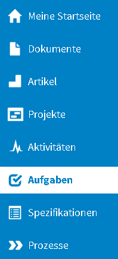
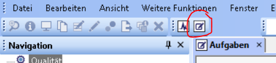
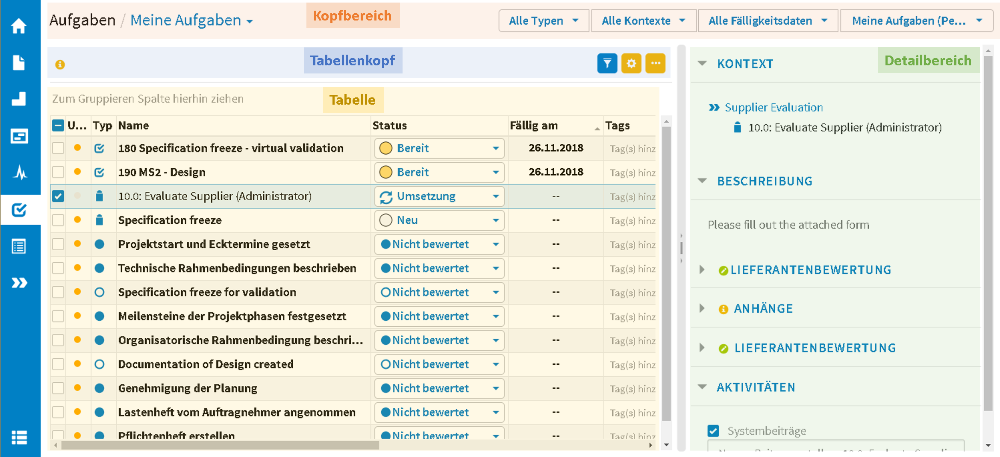

Benutzeroberfläche¶
CONTACT Tasks starten¶

Zugang zu CONTACT Tasks (Web-Client)

Zugang zu CONTACT Tasks (Windows-Client)
Klicken Sie auf das Aufgaben-Symbol im Navigationsbereich, um CONTACT Tasks zu starten.
Teilbereiche von CONTACT Tasks¶

Teilbereiche von CONTACT Tasks
Die Oberfläche von CONTACT Tasks lässt sich in vier Bereiche unterteilen:
- Kopfbereich (mit Benutzersichten und Filtern)
- Tabellenkopf (mit Benachrichtigungen und Einstellungen)
- Tabelle (mit Gruppierungsleiste)
- Detailbereich